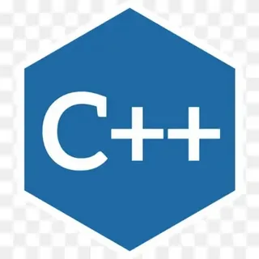

с++
что это такое и с чем его едят
это язык программирования, который используется для создания динамических и интерактивных элементов на веб-сайтах. Он позволяет разработчикам добавлять функциональность к веб-страницам, делать их более отзывчивыми к действиям пользователя и обеспечивать взаимодействие с веб-серверами для загрузки или отправки данных без необходимости перезагрузки страницы.
как им пользоваться?
1.Установить необходимые расширения. Откройте VS Code, перейдите на вкладку «Расширения», найдите «C++» и установите соответствующее расширение. Также установите C/C++ Extension Pack и Code Runner. 2.Изменить настройки. Нажмите на значок шестерёнки (раздел «Управление»), затем на «Настройки». В строке поиска введите «Запускать код в терминале» и нажмите Enter. Прокрутите вниз до пункта «Code-runner: Запускать в терминале» и убедитесь, что чекбокс отмечен. После этого нужно перезапустить VS Code. 2 3.Создать папку для проекта. Для этого перейдите в «Файл» > «Открыть папку» (или нажмите Ctrl+K Ctrl+O). Создайте новую папку и нажмите «Выбрать папку». 4.Создать проект на C++. Нажмите F1, в появившемся окне с множеством команд найдите «c++» и нажмите «Создать новый проект на C++». 5.Протестировать проект. Нажмите кнопку «Собрать и запустить» на панели статуса, откроется терминал, который скомпилирует и запустит программу.